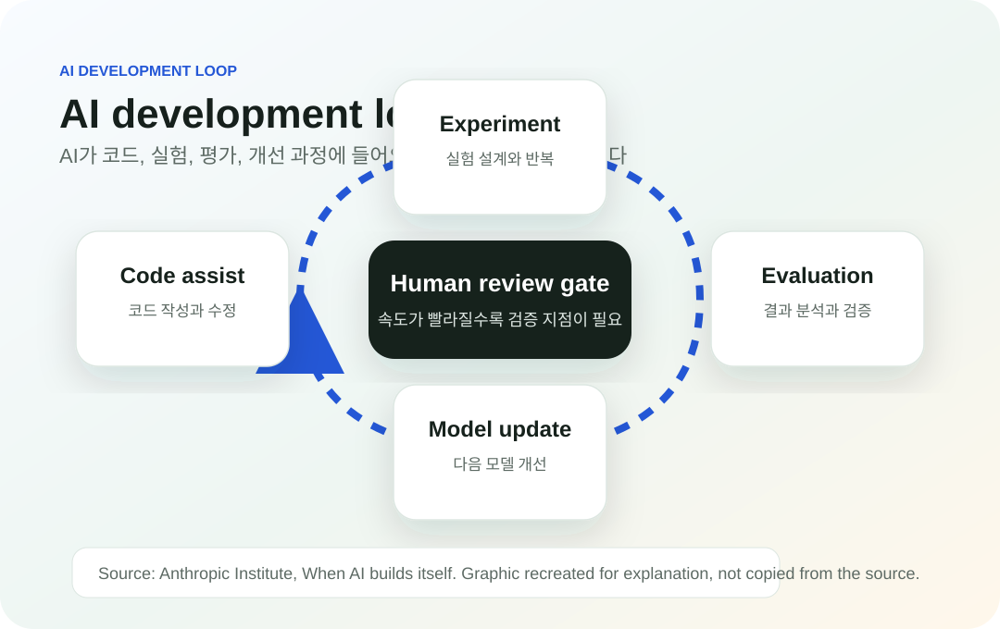

Anthropic 공식 글 소개: When AI builds itself
이 글은 Anthropic Institute가 공개한 “When AI builds itself” 원문을 한글로 해석해서 작성한 글입니다. 원문 전체는 Anthropic 공식 사이트에서 확인할 수 있습니다.
Original Source
Anthropic Institute 원문
원문에서 다루는 내용
Anthropic은 이 글에서 AI가 AI 개발 과정에 점점 더 깊게 들어오고 있다고 설명합니다. 특히 코드 작성, 버그 탐지, 실험 보조, 연구 진행 과정에서 AI가 맡는 역할이 커지고 있다는 점을 다룹니다.
글의 중심 주제는 재귀적 자기개선입니다. 이는 AI 시스템이 다음 세대의 AI 시스템을 만들거나 개선하는 과정에 직접 참여하면서, AI 개발 속도가 더 빨라질 수 있다는 문제를 말합니다.

Anthropic이 제시한 핵심 흐름
- AI 모델은 이미 소프트웨어 개발 과정에서 중요한 보조 역할을 하고 있습니다.
- 이 역할이 커지면 AI 연구와 모델 개발 속도가 더 빨라질 수 있습니다.
- 개발 속도가 빨라질수록 인간의 검증과 안전 관리가 더 중요해질 수 있습니다.
- Anthropic은 이러한 변화에 대비하기 위한 사회적, 기술적 논의가 필요하다고 설명합니다.
원문에 언급된 주요 내용
Anthropic은 Claude가 내부 개발 과정에서 코드 작성과 개발 보조에 많이 사용되고 있다고 설명합니다. 또한 AI가 어려운 코딩 작업을 해결하는 능력이 빠르게 개선되고 있으며, 새 모델이 이전 모델보다 더 복잡한 개발 작업을 처리할 수 있게 되는 흐름을 다룹니다.
원문은 AI가 아직 완전히 스스로 다음 AI를 만드는 단계에 도달했다고 말하지 않습니다. 다만 AI가 AI 개발을 돕는 비중이 커지고 있으며, 이 흐름이 계속될 경우 인간이 직접 개발하는 역할보다 감독하고 검증하는 역할이 더 중요해질 수 있다고 설명합니다.
이 글을 읽을 때 볼 부분
- Anthropic이 AI 개발 속도 변화를 어떻게 설명하는지
- Claude 같은 모델이 코드 작성과 연구 보조에 어떻게 쓰이고 있는지
- 재귀적 자기개선이라는 개념을 어떤 맥락에서 다루는지
- AI 개발을 늦추거나 멈출 수 있는 장치가 필요하다는 주장을 어떻게 제시하는지
| 구분 | 확인할 내용 |
|---|---|
| 주제 | AI가 AI 개발 과정에 더 많이 참여하는 흐름 |
| 핵심 개념 | 재귀적 자기개선과 인간 검증의 필요성 |
| 주의점 | 원문 전체와 세부 맥락은 Anthropic 공식 페이지에서 확인 |
원문 확인
이 페이지는 Anthropic이 공개한 원문의 내용을 한글로 해석해서 작성한 글입니다. 전체 내용은 아래 공식 링크에서 확인할 수 있습니다.